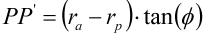
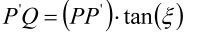
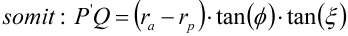
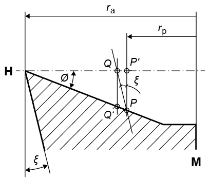

|
|
|


插齿刀的修形
插齿刀的有效切削角和拔模角会导致插齿刀在水平面内的投影产生齿形变形。
这里进行的转换会使水平面内的齿形变形，从而使投影在插齿刀制造完成后再次显示精确的齿形。
通过以角度  φ（有效切削角）磨削，Q 点移动到 P 点（见图 15.88）。如果要使投影 P' 一致（水平面内的精确轮廓），则 P 必须在 H 平面内等于 Q。
φ（有效切削角）磨削，Q 点移动到 P 点（见图 15.88）。如果要使投影 P' 一致（水平面内的精确轮廓），则 P 必须在 H 平面内等于 Q。
 | (12.22) |
 | (12.23) |
 | (12.24) |
其中
| 有效切削角 |
ξ | 轴向截面中的齿顶拔模角 |
M | 插齿刀轴线 |
ra | 插齿刀齿顶圆半径 |
rp | P 点坐标 |
齿形转换：
已知： | 极坐标中的精确齿形 P = r（角度） |
求解： | H 平面中的齿形 P' = r'（角度） |
解： | r' = r + tan( |

图 15.88：插齿刀齿廓
Modification for pinion type cutter
The effective cutting angle and the draft angle of the pinion type cutter cause a tooth form deformation in the projection of the pinion type cutter in the horizontal plane.
The conversion performed here deforms the tooth form in the horizontal plane so that the projection once again shows the exact tooth form once the pinion type cutter has been manufactured.
By grinding with angle (effective cutting angle) Q moves to P (see Figure 15.88). If the projection P' is to agree (exact contour in the horizontal plane), P must equal Q in the H plane.
(12.22) | |
(12.23) | |
(12.24) |
where
| Effective cutting angle |
ξ | Tip draft angle in axial section |
M | Pinion type cutter axis |
ra | Pinion type cutter tip circle radius |
rp | Coordinate of the point P |
Conversion of the tooth form:
Given: | Exact tooth form in polar coordinates P = r (Angle) |
Searched for: | Tooth form in H-plane P' = r' (Angle) |
Solution: | r' = r + tan( |
Figure 15.88: Pinion type cutter profile